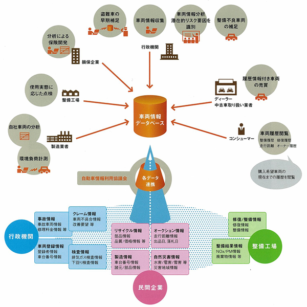

研究・事業内容
本研究所の活動内容や事業についてご紹介します。
一般社団法人車両情報活用研究所は、これまで車両にかかわる情報がユーザーや関連するプレイヤーの皆さまに重要な役割を果たすデータ（情報）になると考えてきました。また、国土交通省はMOTASを起動し車検情報照会システムを立ち上げ、私たちの向かっていく方向へと相互に刺激や協調をしながら進んでいます。
今後も、OBD情報、修理履歴、事故情報さらには電子化された車両からの安全安心を担保するための情報を公開するような働きかけ、またデータの収集や展開に努力してまいります。

車両情報利活用によるエコシステム概念図
活動目的とその内容
車両情報の調査、研究
車検証情報などをはじめとする様々な車両の情報に関わる調査や研究を行います。
車両情報の電子的な利活用に関わる調査、研究
車両情報の電子的な利活用の方法や手段などについて研究を行います。
車両情報に関する情報提供活動、啓蒙/啓発活動
幅広い車両情報に関する情報を、アフターマーケットなどを対象に情報提供を行います。
会員間における車両情報に関する情報交流
本研究会の会員間でそれぞれの持つ車両情報に関する情報交流を行います。
行政機関、関連団体などとの連携、情報交流
車検証情報などをはじめ車両情報全般にわたって、行政機関や関連団体などとの連携を深め、情報交流を行います。
車両情報の電子的な有効活用によるビジネスモデルの創出
ワーキンググループによって具体的なビジネスモデルの創出を目指します。
生涯車歴センター構想案 2014年版
本構想のテーマは、車両の電子的情報や、車が生まれてから廃棄されるまでのトレース情報を集積し、クルマの安全と安心に寄与することです。 特にアフターマーケットにおける車両状態や整備情報の研究の基礎となるデータ集積の手順と方法を検討しました。
第1フェーズ
DTC情報の集積
- ・スキャンツールによるエラーコード収集
- ・DTC発生傾向の把握と共有
- ・診断結果レポートの印刷・提供
第2フェーズ
修理方法情報の集積
- ・実施した修理方法をデータ登録
- ・技術情報交流（写真・図面対応）
- ・貢献に応じたポイント付与制度
第3フェーズ
車検・点検情報の集積
- ・カーユーザー向けアプリとの連携
- ・車両履歴の透明化と資産価値維持
- ・消耗品交換時期の通知サービス
構想実現のための解決策
オープンなWeb登録システム
既存の整備支援システム会社に依存せず、誰でもフェアで安価に利用できる共通Webシステムを構築。これにより小規模工場でも参加可能な体制を作ります。
情報の価値を育てる段階的アプローチ
まずは権利問題の少ないDTC情報から集積し、価値が認められる段階を経て修理履歴・車検情報へと幅を広げます。